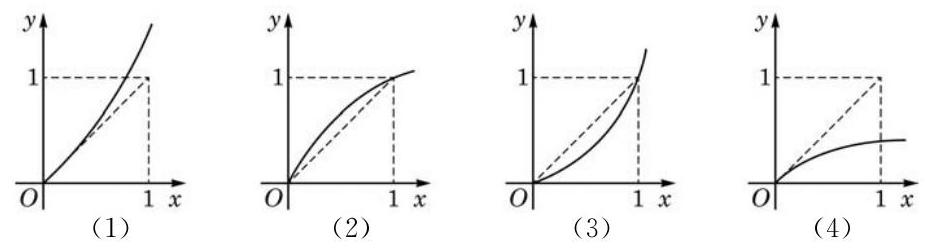
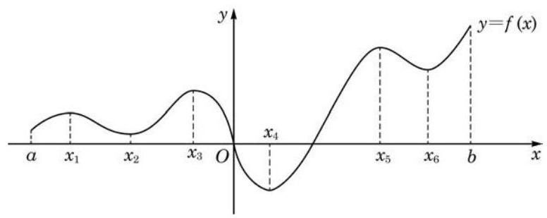
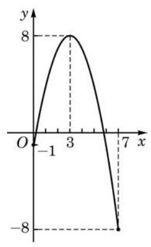
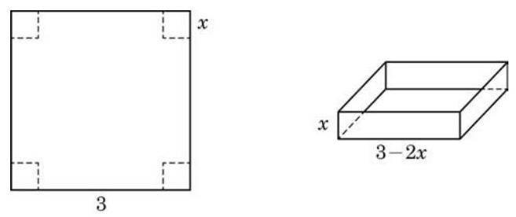
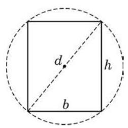
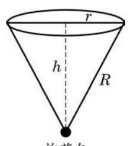
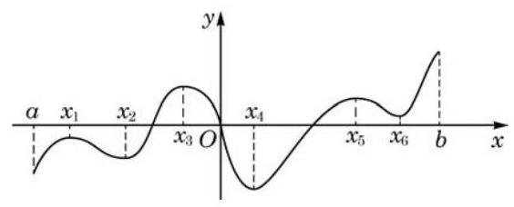
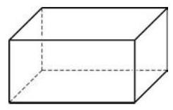

例题 1
例 1 已知 ,求函数 的单调区间.
学生阅读版 / 沪教版高中数学
选择性必修第二册
第5章导数及其应用 · 保留教材主线与原题
教材与正式教参整合
在对函数的研究中, 单调性与极大 (小) 值、最大 (小) 值是重要的主题之一. 但限于初等数学所能提供的工具, 在很多常见函数面前, 我们往往束手无策, 而导数则为我们研究函数的这些性质提供了通用和便捷的手段.
本章引入的定理大多需要高等数学的知识才能严格证明, 但同学们可以借助一些熟悉的函数 (如二次函数) 来验证这些结论的合理性.
函数的单调性研究的是在一个区间内函数是否严格增或严格减, 即函数值是否随着自变量的增大而增大, 或随着自变量的增大而减小. 导数是函数的瞬时变化率, 反映了在自变量发生变化的瞬间, 函数值随之发生的增减变化, 因此, 导数是研究函数单调性的最佳工具. 特别地, 从导数的正负就可以直接判断函数的单调性:
定理 在区间 上,若 ,则函数 在该区间严格增; 若 ,则函数 在该区间严格减.
在导数值都存在的情况下, 导数值由正变负或由负变正的过程中会出现导数等于零的点, 即函数的驻点. 因此, 要把函数的单调增区间和单调减区间划分出来, 就要先找到函数的驻点. 找到驻点后, 再看驻点两侧导数值的正负是否发生变化, 如果发生变化了, 此驻点就成为单调增区间与单调减区间的分界点.
例 1 已知 ,求函数 的单调区间.
例 2 已知 ,求函数 的单调区间.
例 3 已知 ,求函数 的单调区间.
例 4 已知 ,求函数 的单调区间.
例 5 已知在区间 上 . 在图 5-3-1 所示的图像中,哪些有可能表示函数 ? 为什么?

图 5-3-1
(1) ； (2) ；
(3) ，其中 .
(1) ; (2) .
观察图 5-3-2 中函数 的图像,其中有一些特殊的点, 在这些特殊点的左右两侧附近, 函数的单调性发生了改变. 例如,函数在点 的左侧附近严格增,右侧附近严格减，此处出现了一个“山峰”；又如，函数在点 的左侧附近严格减，右侧附近严格增，此处出现了一个“山谷”.

图 5-3-2
因此,图 5-3-2 所示的函数有三个极大值点 , 还有三个极小值点 .
在导数都存在的前提下, 极值点一定是相应函数单调增区间及单调减区间的分界点, 从而是函数的驻点, 函数曲线在该点的切线是水平的. 但反过来, 我们却不能说一个函数的驻点一定是其极值点. 例如,在函数 中,点 虽是其驻点,但不是极值点,因为这个函数在整个区间 上是严格增的. 因此,要找到函数 的极值点,通过 找到驻点 只是第一步,还要根据驻点附近 的符号才能断定 是否为 的极值点.
具体地说,我们有如下定理:
定理 设点 是函数 的驻点.
(1)若在点 的左侧附近有 ，而在 的右侧附近有 ,则函数 在 处取得极大值;
(2)若在点 的左侧附近有 ，而在 的右侧附近有 ,则函数 在 处取得极小值.
例 6 已知 ,求函数 的单调区间和极值.
例 7 求正弦函数 的单调区间和极值.
例 8 已知 ,求函数 的单调区间和极值.

图 5-3-3
上面所说的一个区间 上的连续函数,可以直观地理解为在区间 上图像为一条连绵不断的曲线的函数. 更精确及普适的连续函数的定义, 要用到严格的极限语言, 在高等数学中才能给出.
例 9 已知 ,求函数 在区间 上的最大值与最小值.
例 10 已知 ,求函数 在 上的最大值与最小值.
导数为研究函数的单调性、极值与最值提供了有力的工具. 利用这一工具,我们可以对熟悉的二次函数 进行回顾和再认识. 以下仅讨论 的情况, 的情况也可以用类似的方法获得相应的结果.
首先,可以利用导数的正负来判断函数 的单调性, 同时求出它的极值.
记 . 对该函数求导,可得 , 令 ,解得函数有唯一驻点 . 可以列表如下:
表 5-6
| - | 0 | + | |
| ↘ | 极小值 | ↗ |
因此,函数 的单调减区间为 ,单调增区间为 在 处取得极小值 . 这个极小值也是该函数在区间 上的最小值.
知道了该函数的单调区间之后, 结合函数的零点, 就可以解决相应的不等式问题.
我们已经知道,求二次函数 的零点, 就是求一元二次方程 的实根.
此处所得结果与你之前的认识是否一致? 方法是不是更简便?
令 ,我们已知: 当 时,方程有两个不相等的实根 ; 当 时,方程有两个相等的实根 ; 当 时,方程无实根.
上述方程 的实根就是函数 的零点; 再结合函数 的单调性,我们就可以求得使 (或 ) 的 的取值范围,也就是不等式 (或 ) 的解集.
记 . 为了解不等式 , 可以分以下三种情况讨论:
(1)当 时,比较函数零点与驻点的大小关系,有
因为 在区间 上严格减,所以
当 时, ; 当 时, .
同样地,因为 在区间 上严格增,所以
当 时, ; 当 时, .
此外, .
因此,该不等式的解集为 , 即 .
(2)当 时,有 ,由函数单调性可知,当 时,均有 . 因此,该不等式的解集为 .
(3)当 时，由函数单调性可知，当 时,均有 . 因此,该不等式的解集为 .
综合以上分析可得: 当 时,不等式 的解集为 ; 当 时,该不等式的解集为 . 这就很方便地得到必修课程第 2 章中的相应结论.
知道了函数的单调性和零点, 相应的不等式问题就迎刃而解了.
(1)函数在某区间上的极大值不会小于它的极小值；
(2)函数在某区间上的最大值不会小于它的最小值；
(3)函数在某区间上的极大值就是它在该区间上的最大值；
(4)函数在某区间上的最大值就是它在该区间上的极大值.
前面已经看到, 导数可用来研究函数在某区间上的最大 (小)值, 从而对解决何时利润最大、何时用料最省等优化问题发挥着重要作用.
例 11 图 5-3-4 是一张边长为 3 的正方形硬纸板, 现把它的四个角上裁去边长为 的四个小正方形,再折叠成无盖纸盒. 当裁去的小正方形边长 发生变化时,纸盒的容积 会随之发生变化. 当 在什么范围内变化时,容积 随着 的增大而增大? 在什么范围内变化时,容积 随着 的增大而减小? 当 取何值时,容积 最大? 最大值是多少? (纸板厚度忽略不计)

图 5-3-4
例 12 已知某商品的成本 与产量 满足函数关系 ,其中 ,并定义平均成本为 , 其中 .
经济学中通常将 称为边际成本, 它代表产量为 时, 增加单位产量需付出的成本增加量.
(1)比较 和 ,解释两者的大小代表了怎样的实际意义；
(2)当产量为多少时，平均成本最少？
例 13 如图 5-3-5,将一根直径为 的圆木锯成截面为矩形的梁. 问: 矩形的高 和宽 应如何选择,才能使梁的抗弯强度 最大?

图 5-3-5
在很多情形下(如例 11 与例 13)，由实际问题本身的意义， 可知函数在区间内部必定存在最大值(或最小值)，而区间内部只有一个驻点, 由此即可断定: 该函数在区间内部的唯一驻点处取得最大值(或最小值).
例 14 一艘船航行所需的燃料费与船速的平方成正比. 如果船速是 ,那么每小时的燃料费是 80 元. 已知该船航行的其他费用为每小时 480 元,在 的航程中,保持怎样的船速可使航行总费用最少? (结果精确到 )

(第 2 题)
(1) ; (2) .

(第 3 题)
(1) (2) ；
(3) ； (4) .
(1) ， 为正奇数； (2) ， 为正偶数.

(第 3 题)